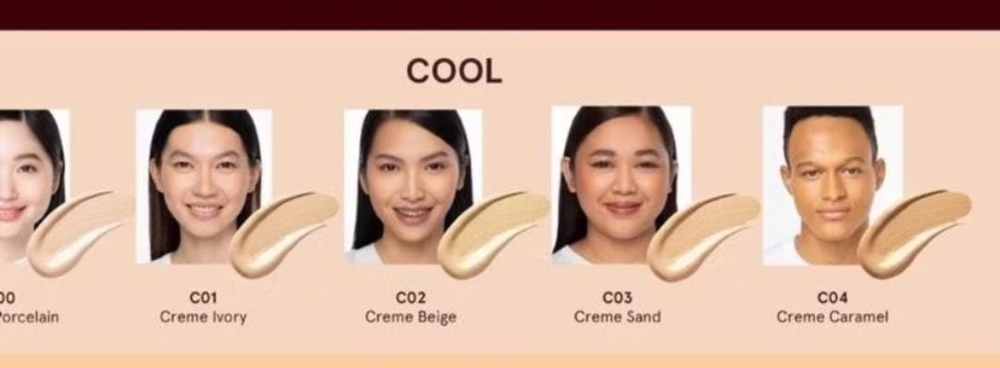
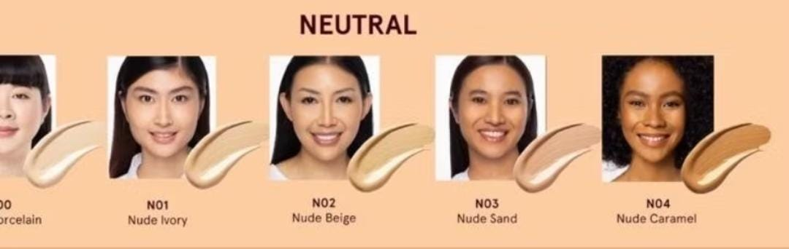

Cek Tone Kulit
Jawab beberapa pertanyaan berikut untuk mengetahui apakah tone kulit Anda cool, warm, atau neutral.
Jenis Tone Kulit & Rekomendasi

Cool Tone
Kulit dengan undertone dingin memiliki hint merah muda atau biru. Cocok dengan lipstik berry, eyeshadow biru, dan foundation berbasis pink. Skincare: Gunakan produk dengan niacinamide untuk mencerahkan.

Warm Tone
Kulit dengan undertone hangat memiliki hint kuning atau emas. Pilih lipstik coral, eyeshadow cokelat, dan foundation berbasis kuning. Skincare: Gunakan produk dengan vitamin C untuk kilau alami.

Neutral Tone
Kulit dengan undertone netral cocok dengan berbagai warna makeup, seperti nude atau pink. Skincare: Fokus pada hidrasi dengan produk berbahan hyaluronic acid.